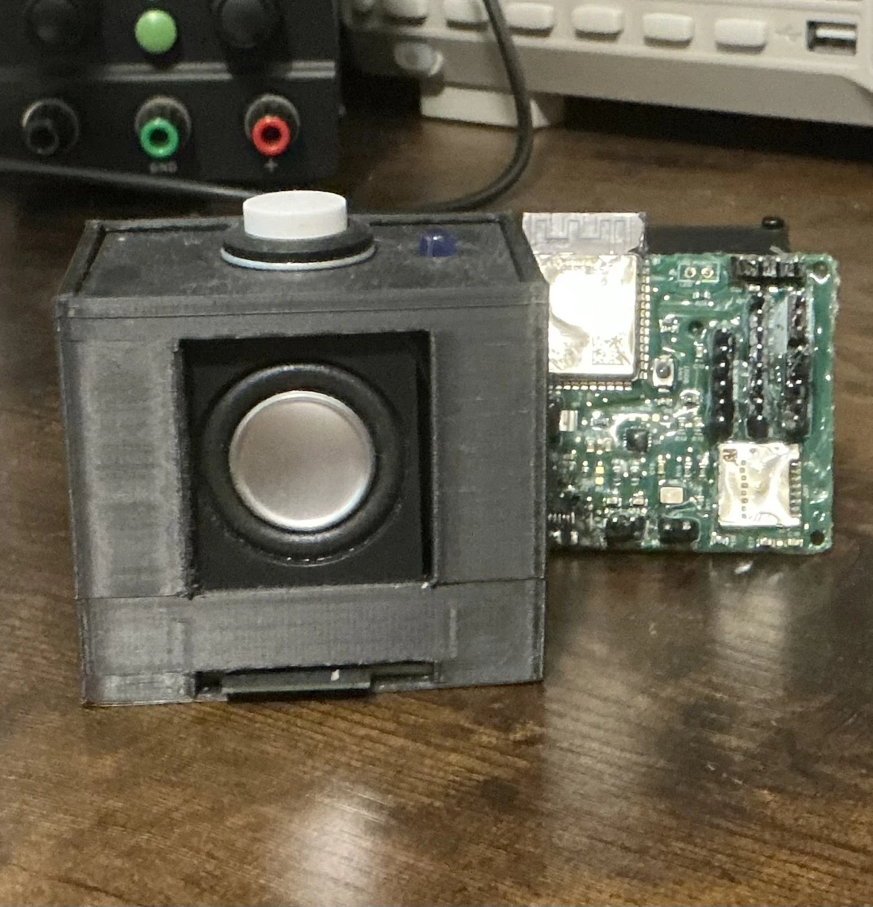

FINCH / VOICE ASSISTANT01Finch desktop
ESP32 VOICE ASSISTANT
Finch desktop
voice assistant.
Finch is an Alexa-style desktop assistant with custom hardware. A custom ESP32 board listens through a microphone, sends the request to a Python service, then plays the spoken answer through its speaker.
The project includes PCB design, audio, Wi-Fi, firmware and an enclosure. The first version works; a second is being developed with more storage and additional interface features.
View Finch project